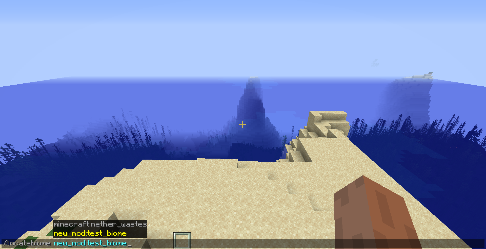
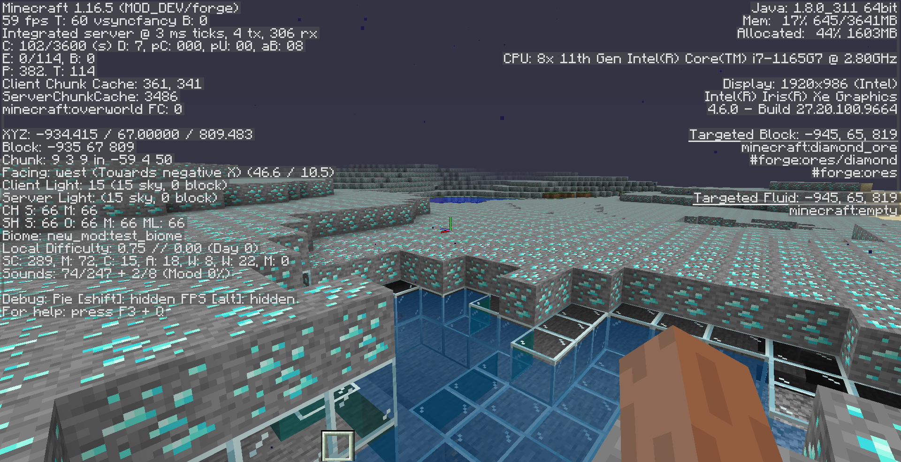

もくじ
サーフェイスビルダーのクラス
バイオーム本体のクラス
・クラスのコード
・地形
・フィーチャーの指定
・表面にスポーンするモブの指定
・ストラクチャの生成
・空間の性質
・空間の性質(特殊)

ModIdやメインクラスのjavaファイル名などの各自で異なる部分はいちいち説明しないのでご注意を。
メインのクラスは「com.masec.newmod」の「NewMod」とし、ModIDは「new_mod」とします。
新しいパッケージ「com.masec.newmod.world.biome」を作成し、中に「ModConfiguredSurfaceBuilders」クラスを新しく作ります。
作られたファイルを編集して、こうなります。
package com.masec.newmod.world.biome;
import net.minecraft.block.Blocks;
import net.minecraft.util.ResourceLocation;
import net.minecraft.util.registry.WorldGenRegistries;
import net.minecraft.world.gen.surfacebuilders.ConfiguredSurfaceBuilder;
import net.minecraft.world.gen.surfacebuilders.ISurfaceBuilderConfig;
import net.minecraft.world.gen.surfacebuilders.SurfaceBuilder;
import net.minecraft.world.gen.surfacebuilders.SurfaceBuilderConfig;
import com.masec.newmod.NewMod;
public class ModConfiguredSurfaceBuilders {
public static ConfiguredSurfaceBuilder<?> TEST_SURFACE = register("test_surface",
SurfaceBuilder.DEFAULT.configured(new SurfaceBuilderConfig(
Blocks.DIAMOND_ORE.defaultBlockState(),
Blocks.GLASS.defaultBlockState(),
Blocks.BEDROCK.defaultBlockState()
)));
private static <SC extends ISurfaceBuilderConfig>ConfiguredSurfaceBuilder register(String name,
ConfiguredSurfaceBuilder csb) {
return WorldGenRegistries.register(WorldGenRegistries.CONFIGURED_SURFACE_BUILDER,
new ResourceLocation(NewMod.MOD_ID, name), csb);
}
} 書き換える場所をマーカーで示しました。
桃色でマーカーしたところは定義なので、空気を読んで大文字とかを真似して自由に決めてください。
橙色でマーカーしたところはたぶん、表面の起伏を指定するものだと思います。表から選んでください。
青色でマーカーしたところは平原でいうところの上から草ブロック、土ブロック、海岸などの砂ブロックとなる部分のブロックを指定します。
| 変数 | 概要 |
|---|---|
| DEFAULT | デフォルト |
| MOUNTAIN | 山 |
| SHATTERED_SAVANNA | こまごまとしたサバンナ |
| GRAVELLY_MOUNTAIN | 砂利の山岳 |
| GIANT_TREE_TAIGA | 大きな木のタイガ |
| SWAMP | 湿地 |
| BADLANDS | メサ |
| WOODED_BADLANDS | メサの森 |
| ERODED_BADLANDS | 侵食されたメサ |
| FROZEN_OCEAN | 凍った海 |
| NETHER | ネザー |
| NETHER_FOREST | ネザーの森 |
| SOUL_SAND_VALLEY | ソウルサンドの谷 |
| BASALT_DELTAS | 玄武岩デルタ |
| NOPE | なし |
パッケージ「com.masec.newmod.world.biome」の中に「TestBiome」クラスを新しく作ります。名前は各自で決めます。
作られたファイルを編集して、こうなります。
package com.masec.newmod.world.biome;
import net.minecraft.client.audio.BackgroundMusicTracks;
import net.minecraft.entity.EntityClassification;
import net.minecraft.entity.EntityType;
import net.minecraft.particles.ParticleTypes;
import net.minecraft.util.SoundEvents;
import net.minecraft.world.biome.*;
import net.minecraft.world.gen.GenerationStage;
import net.minecraft.world.gen.feature.Features;
import net.minecraft.world.gen.feature.structure.StructureFeatures;
import net.minecraft.world.gen.surfacebuilders.ConfiguredSurfaceBuilder;
import net.minecraftforge.eventbus.api.IEventBus;
import net.minecraftforge.fml.RegistryObject;
import net.minecraftforge.registries.DeferredRegister;
import net.minecraftforge.registries.ForgeRegistries;
import com.masec.newmod.NewMod;
import java.util.function.Supplier;
public class TestBiome {
public static final DeferredRegister<Biome> BIOMES = DeferredRegister.create(ForgeRegistries.BIOMES,
NewMod.MOD_ID);
public static final RegistryObject<Biome> TEST_BIOME = BIOMES.register("test_biome",
() -> makeTestBiome(() -> ModConfiguredSurfaceBuilders.TEST_SURFACE, 0.125f, 0.05f));
private static Biome makeTestBiome(final Supplier<ConfiguredSurfaceBuilder<?>> surfaceBuilder, float depth,
float scale) {
MobSpawnInfo.Builder mobspawninfo$builder = new MobSpawnInfo.Builder();
DefaultBiomeFeatures.farmAnimals(mobspawninfo$builder);
DefaultBiomeFeatures.ambientSpawns(mobspawninfo$builder);
mobspawninfo$builder.addSpawn(EntityClassification.MONSTER,
new MobSpawnInfo.Spawners(EntityType.BLAZE, 100, 7, 10));
mobspawninfo$builder.addSpawn(EntityClassification.MONSTER,
new MobSpawnInfo.Spawners(EntityType.ZOMBIFIED_PIGLIN, 50, 4, 4));
BiomeGenerationSettings.Builder biomegenerationsettings$builder = (new BiomeGenerationSettings.Builder())
.surfaceBuilder(surfaceBuilder);
DefaultBiomeFeatures.addDefaultCarvers(biomegenerationsettings$builder);
DefaultBiomeFeatures.addDefaultLakes(biomegenerationsettings$builder);
DefaultBiomeFeatures.addDefaultMonsterRoom(biomegenerationsettings$builder);
DefaultBiomeFeatures.addDefaultUndergroundVariety(biomegenerationsettings$builder);
DefaultBiomeFeatures.addDefaultOres(biomegenerationsettings$builder);
DefaultBiomeFeatures.addDefaultSprings(biomegenerationsettings$builder);
DefaultBiomeFeatures.addSurfaceFreezing(biomegenerationsettings$builder);
biomegenerationsettings$builder.addStructureStart(StructureFeatures.MINESHAFT);
biomegenerationsettings$builder.addStructureStart(StructureFeatures.RUINED_PORTAL_SWAMP);
biomegenerationsettings$builder.addStructureStart(StructureFeatures.BURIED_TREASURE);
biomegenerationsettings$builder.addFeature(GenerationStage.Decoration.LAKES, Features.LAKE_LAVA);
return (new Biome.Builder())
.precipitation(Biome.RainType.NONE)
.biomeCategory(Biome.Category.DESERT)
.depth(depth)
.scale(scale)
.temperature(1.5F)
.downfall(0.9F)
.specialEffects((new BiomeAmbience.Builder())
.waterColor(34952)
.waterFogColor(34952)
.fogColor(3355460)
.foliageColorOverride(34952)
.grassColorOverride(34952)
.ambientParticle(new ParticleEffectAmbience(ParticleTypes.WARPED_SPORE, 0.03f))
.skyColor(3355460)
.ambientLoopSound(SoundEvents.AMBIENT_CRIMSON_FOREST_LOOP)
.ambientMoodSound(new MoodSoundAmbience(SoundEvents.AMBIENT_WARPED_FOREST_MOOD, 6000, 8, 2.0D))
.ambientAdditionsSound(new SoundAdditionsAmbience(SoundEvents.AMBIENT_NETHER_WASTES_ADDITIONS, 0.0111D))
.backgroundMusic(BackgroundMusicTracks.createGameMusic(SoundEvents.MUSIC_BIOME_CRIMSON_FOREST))
.build())
.mobSpawnSettings(mobspawninfo$builder.build())
.generationSettings(biomegenerationsettings$builder.build())
.build();
}
public static void register(IEventBus eventBus) {
BIOMES.register(eventBus);
}
}バイオームの性質を指定するところ以外で書き換える場所をマーカーで示しました。
桃色でマーカーしたところはさきほど作ったサーフェイスビルダーです。
バイオームの性質の指定について説明します。
26行目右側にある小数二つは、depth、scaleといって地形をつかさどる数値です。
その下のmakeTestBiome関数の中にある「DefaultBiomeFeatures.〇〇(□□$builder);」はフィーチャーを指定しています。 以下では「DefaultBiomeFeatures」を「DBF」と略します。
動物がスポーンするようにします。
地下にコウモリとモンスターがスポーンするようにします。
洞窟と渓谷を生成します。
マグマと水の池を生成します。
スポナー部屋を生成します。
土や砂利、花崗岩などが地下に生成されるようにします。
バニラの鉱石を通常の分布で生成します。
マグマと水の池を生成します。
mobspawninfo$builder.addSpawn(EntityClassification.MONSTER,
new MobSpawnInfo.Spawners(EntityType.BLAZE, 100, 7, 10));
エンティティ、他のモブとの出現率の比、最小数、最大数を指定します。
複数指定する場合はこの一文全体を増やします。
biomegenerationsettings$builder.addStructureStart(StructureFeatures.MINESHAFT);生成するストラクチャを指定します。以下から選んでください。 複数指定する場合はこの一文全体を増やします。
| 変数 | 概要 |
|---|---|
| MINESHAFT | 廃坑 |
| MINESHAFT_MESA | 廃坑(メサ) |
| WOODLAND_MANSION | 森の館 |
| JUNGLE_TEMPLE | ジャングルの寺院 |
| DESERT_PYRAMID | ピラミッド |
| IGLOO | イグルー |
| SHIPWRECK | 沈没船 |
| SHIPWRECH_BEACHED | 打ち上げられた難破船 |
| SWAMP_HUT | 魔女の家 |
| STRONGHOLD | エンドポータルの遺跡 |
| OCEAN_MONUMENT | 海底神殿 |
| OCEAN_RUIN_COLD | 海底遺跡(冷たい海) |
| OCEAN_RUIN_WARM | 海底遺跡(暖かい海) |
| NETHER_BRIDGE | ネザー要塞 |
| NETHER_FOSSIL | ネザーの化石 |
| END_CITY | エンドシティ |
| BURIED_TREASURE | 埋められた宝 |
| BASTION_REMNANT | ピグリンの砦 |
| PILLAGER_OUTPOST | ピレジャーのやぐら |
| VILLAGE_PLAINS | 平原の村 |
| VILLAGE_DESERT | 砂漠の村 |
| VILLAGE_SAVANNA | サバンナの村 |
| VILLAGE_SNOWY | 雪原の村 |
| VILLAGE_TAIGA | タイガの村 |
| RUINED_PORTAL_STANDARD | 壊れたネザーゲート(通常) |
| RUINED_PORTAL_DESERT | 壊れたネザーゲート(砂漠) |
| RUINED_PORTAL_JUNGLE | 壊れたネザーゲート(ジャングル) |
| RUINED_PORTAL_SWAMP | 壊れたネザーゲート(湿地) |
| RUINED_PORTAL_MOUNTAIN | 壊れたネザーゲート(山岳) |
| RUINED_PORTAL_OCEAN | 壊れたネザーゲート(海) |
| RUINED_PORTAL_NETHER | 壊れたネザーゲート(ネザー) |
下半分にある「return」以降のかたまりがそうです。
降水について指定します。NONE(なし)かRAIN(雨)かSNOW(雪)です。
バイオームのカテゴリを指定します。
| 変数 | 概要 |
|---|---|
| NONE | なし |
| TAIGA | タイガ |
| EXTREME_HILLS | 山岳 |
| JUNGLE | ジャングル |
| MESA | メサ |
| PLAINS | 平原 |
| SAVANNA | サバンナ |
| ICY | 雪原 |
| THEEND | エンド |
| BEACH | ビーチ |
| FOREST | 森 |
| OCEAN | 海 |
| DESERT | 砂漠 |
| RIVER | 川 |
| SWAMP | 湿地 |
| MUSHROOM | きのこ島 |
| NETHER | ネザー |
気温を指定します。高いとスポンジの水が蒸発したり、低いと水が凍ったりします。
平原は0.8, 砂漠とネザーは2.0, 雪原は0.0です。
平原は0.4, 砂漠は0.0, 雪原は0.5です。
.specialEffects(BiomeAmbience)のBiomeAmbienceに指定する値についてです。
「色を整数で指定する」 → 赤、緑、青をそれぞれ0~255の値で示し、(赤)×65535+(緑)×255+(青)の値で指定します。わからなかったらこのサイトで取得してください。
水の色を整数で指定します。
水中にいるときの霧の色を整数で指定します。
霧の色を整数で指定します。
草や一部の葉っぱブロック、ツタなど植物の色を整数で指定します。
草ブロックの色を整数で指定します。
バイオーム全体にパーティクルを出現させられます。パーティクル、出現率(量)を指定します。
| 変数 | 概要 |
|---|---|
| AMBIENT_ENTITY_EFFECT | ポーションのモヤモヤ |
| ANGRY_VILLAGER | 村人が怒ったときのやつ |
| BARRIER | バリアブロック |
| BLOCK | ブロックの破片 |
| BUBBLE | 「泡」 |
| CLOUD | 残留ポーション |
| CRIT | クリティカル攻撃 |
| DAMAGE_INDICATOR | ダメージを与えたときの黒いハート |
| DRAGON_BREATH | ドラゴンブレス |
| DRIPPING_LAVA | ブロックの下から滲むマグマのしずく |
| FALLING_LAVA | 滴り落ちているマグマのしずく |
| LANDING_LAVA | 着地したマグマのしずく |
| DRIPPING_WATER | ブロックの下から滲む水滴 |
| FALLING_WATER | 滴り落ちている水滴 |
| DUST | レッドストーンなど |
| EFFECT | ポーションのモヤモヤ |
| ELDER_GUARDIAN | エルダーガーディアン |
| ENCHANTED_HIT | エンチャント特効攻撃 |
| ENCHANT | エンチャント台 |
| END_ROD | エンドロッド |
| ENTITY_EFFECT | ポーションのモヤモヤ |
| EXPLOSION_EMITTER | 爆発 |
| EXPLOSION | 爆発 |
| FALLING_DUST | 重力ブロックが浮いてる時のやつ |
| FIREWORK | 花火 |
| FISHING | 釣り |
| FLAME | 松明の炎 |
| SOUL_FIRE_FLAME | 青い松明の炎 |
| SOUL | ソウルスピードの魂 |
| FLASH | 花火のフラッシュ |
| HAPPY_VILLAGER | 村人が喜んでる時のやつ |
| COMPOSTER | コンポスター |
| HEART | 繁殖のハート |
| INSTANT_EFFECT | ？ |
| ITEM | アイテムの破片 |
| ITEM_SLIME | スライムのしずく |
| ITEM_SNOWBALL | 雪玉の破片 |
| LARGE_SMOKE | ブレイズの煙 |
| LAVA | マグマからたまに飛び出るやつ |
| MYCELIUM | 菌糸ブロックの表面に出るちっちゃいやつ |
| NOTE | 音符 |
| POOF | モブが倒されたときの煙 |
| PORTAL | ポータル |
| RAIN | 雨 |
| SMOKE | 松明の煙 |
| SNEEZE | パンダのくしゃみ |
| SPIT | ラマのつば |
| SQUID_INK | イカのインク |
| SWEEP_ATTACK | 剣のスイープ攻撃 |
| TOTEM_OF_UNDYING | 不死のトーテム |
| UNDERWATER | 水中に漂うちっちゃいやつ |
| SPLASH | スプラッシュポーション |
| WITCH | ウィッチの紫のパーティクル |
| BUBBLE_POP | 泡？ |
| CURRENT_DOWN | 下降水流 |
| BUBBLE_COLUMN_UP | 上昇水流 |
| NAUTILUS | コンジット？ |
| DOLPHIN | イルカ |
| CAMPFIRE_COSY_SMOKE | キャンプファイヤの煙 |
| CAMPFIRE_SIGNAL_SMOKE | キャンプファイヤの煙(長い) |
| DRIPPING_HONEY | 滲み出るハチミツのしずく |
| FALLING_HONEY | 滴り落ちているハチミツのしずく |
| LANDING_HONEY | 着地したハチミツのしずく |
| FALLING_NECTAR | ハチから滴り落ちている花粉 |
| ASH | ソウルサンドの谷に漂う灰 |
| CRIMSON_SPORE | 深紅の森の胞子 |
| WARPED_SPORE | 歪んだ森の胞子 |
| DRIPPING_OBSIDIAN_TEAR | 滲み出る黒曜石の涙 |
| FALLING_OBSIDIAN_TEAR | 滴り落ちている黒曜石の涙 |
| LANDING_OBSIDIAN_TEAR | 着地した黒曜石の涙 |
| REVERSE_PORTAL | ポータル？ |
| WHITE_ASH | 玄武岩デルタに漂う灰 |
空の色を整数で指定します。
ループさせる環境音を指定します。
ムード環境音を指定します。
追加の環境音を指定します。
| 変数 | 概要 |
|---|---|
| AMBIENT_CAVE | 空同音 |
| AMBIENT_BASALT_DELTAS_ADDITIONS | 玄武岩デルタの環境音(追加) |
| AMBIENT_BASALT_DELTAS_LOOP | 玄武岩デルタの環境音(ループ) |
| AMBIENT_BASALT_DELTAS_MOOD | 玄武岩デルタの環境音(ムード) |
| AMBIENT_CRIMSON_FOREST_ADDITIONS | 深紅の森の環境音(追加) |
| AMBIENT_CRIMSON_FOREST_LOOP | 深紅の森の環境音(ループ) |
| AMBIENT_CRIMSON_FOREST_MOOD | 深紅の森の環境音(ムード) |
| AMBIENT_NETHER_WASTES_ADDITIONS | 通常ネザーの環境音(追加) |
| AMBIENT_NETHER_WASTES_LOOP | 通常ネザーの環境音(ループ) |
| AMBIENT_NETHER_WASTES_MOOD | 通常ネザーの環境音(ムード) |
| AMBIENT_SOUL_SAND_VALLEY_ADDITIONS | ソウルサンドの谷の環境音(追加) |
| AMBIENT_SOUL_SAND_VALLEY_LOOP | ソウルサンドの谷の環境音(ループ) |
| AMBIENT_SOUL_SAND_VALLEY_MOOD | ソウルサンドの谷の環境音(ムード) |
| AMBIENT_WARPED_FOREST_ADDITIONS | 歪んだ森の環境音(追加) |
| AMBIENT_WARPED_FOREST_LOOP | 歪んだ森の環境音(ループ) |
| AMBIENT_WARPED_FOREST_MOOD | 歪んだ森の環境音(ムード) |
| AMBIENT_UNDERWATER_LOOP | 水中の環境音(ループ) |
| AMBIENT_UNDERWATER_LOOP_ADDITIONS | 水中の環境音(追加) |
| AMBIENT_UNDERWATER_LOOP_ADDITIONS_RARE | 水中の環境音(追加,レア) |
| AMBIENT_UNDERWATER_LOOP_ADDITIONS_ULTRA_RARE | 水中の環境音(追加,激レア) |
| CONDUIT_AMBIENT | コンジット |
| CONDUIT_AMBIENT_SHORT | コンジット(短い) |
| FIRE_AMBIENT | 炎 |
| LAVA_AMBIENT | マグマ |
| PORTAL_AMBIENT | ポータル |
| RESPAWN_ANCHOR_AMBIENT | リスポーンアンカー |
| WATER_AMBIENT | 水 |
BGMを指定します。
| 変数 | 概要 |
|---|---|
| MUSIC_CREATIVE | クリエイティブ |
| MUSIC_CREDITS | クレジット |
| MUSIC_DISC_11 | レコード「11」 |
| MUSIC_DISC_13 | レコード「13」 |
| MUSIC_DISC_BLOCKS | レコード「Blocks」 |
| MUSIC_DISC_CAT | レコード「Cat」 |
| MUSIC_DISC_CHIRP | レコード「Chirp」 |
| MUSIC_DISC_FAR | レコード「Far」 |
| MUSIC_DISC_MALL | レコード「Mall」 |
| MUSIC_DISC_MELLOHI | レコード「Mellohi」 |
| MUSIC_DISC_PIGSTEP | レコード「Pigstep」 |
| MUSIC_DISC_STAL | レコード「stal」 |
| MUSIC_DISC_STRAD | レコード「strad」 |
| MUSIC_DISC_WAIT | レコード「wait」 |
| MUSIC_DISC_WARD | レコード「ward」 |
| MUSIC_DRAGON | エンダードラゴン戦 |
| MUSIC_END | エンド |
| MUSIC_GAME | サバイバル |
| MUSIC_MENU | メインメニュー |
| MUSIC_BIOME_BASALT_DELTAS | 玄武岩デルタ |
| MUSIC_BIOME_NETHER_WASTES | 通常ネザー |
| MUSIC_BIOME_SOUL_SAND_VALLEY | ソウルサンドの谷 |
| MUSIC_BIOME_CRIMSON_FOREST | 深紅の森 |
| MUSIC_BIOME_WARPED_FOREST | 歪んだ森 |
| MUSIC_UNDER_WATER | 水中 |
新しいパッケージ「com.masec.newmod.world.gen」を作成し、中に「TestBiomeGeneration」クラスを新しく作ります。名前は各自で決めます。
作られたファイルを編集して、こうなります。
package com.masec.firstmod.world.gen;
import net.minecraft.util.RegistryKey;
import net.minecraft.world.biome.Biome;
import net.minecraftforge.common.BiomeDictionary;
import net.minecraftforge.common.BiomeManager;
import net.minecraftforge.registries.ForgeRegistries;
import com.masec.newmod.world.biome.TestBiome;
import java.util.Objects;
import static net.minecraftforge.common.BiomeDictionary.Type.*;
public class TestBiomeGeneration {
public static void generateBiomes() {
addBiome(TestBiome.TEST_BIOME.get(), BiomeManager.BiomeType.WARM, 100, PLAINS, OVERWORLD);
}
private static void addBiome(Biome biome, BiomeManager.BiomeType type, int weight, BiomeDictionary.Type... types) {
RegistryKey<Biome> key = RegistryKey.create(ForgeRegistries.Keys.BIOMES,
Objects.requireNonNull(ForgeRegistries.BIOMES.getKey(biome)));
BiomeDictionary.addTypes(key, types);
BiomeManager.addBiome(type, new BiomeManager.BiomeEntry(key, weight));
}
}書き換える場所をマーカーで示しました。
桃色でマーカーしたところは、バイオームの気候、生成率の比、残りは全てバイオームのタイプを指定しています。
気候はDESERT(あつい), DESERT_LEGACY(あったか～い), WARM(ふつう), COOL(つめた～い), ICY(さむい)から選びます。
バイオームのタイプは以下から選びます
| バイオームのタイプ(ジェネリック) | 概要 |
|---|---|
| MESA | メサ |
| FOREST | 森 |
| PLAINS | 平原 |
| MOUNTAIN | 山岳 |
| HILLS | 丘 |
| SWAMP | 湿地 |
| SANDY | 砂漠 |
| SNOWY | 雪原 |
| WASTELAND | 荒野 |
| BEACH | ビーチ |
| VOID | 奈落 |
| バイオームのタイプ(ディメンション) | 概要 |
| OVERWORLD | 地上 |
| NETHER | ネザー |
| END | エンド |
メインクラスのファイルに少し書き加えます。各自で名前が違うと思いますが「NewMod.java」を開きます。
これを書き加えて終わりです。上のほうは各自で書き換える部分がありますね。
ちなみに、カスタムディメンションだけに生成したい場合は下のgenerationのやつは消します。
コマンドを使って探します。この時点で追加できてることが分かりますね。
このように異様なバイオームが追加できました。

・Forge 1.17.1 Modding Tutorial | CUSTOM BIOMES | Forge Modding 1.17.1 #31 - YouTube